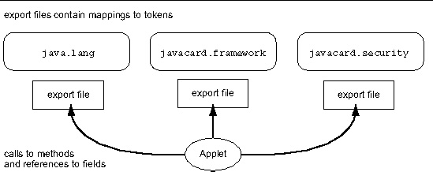

| Development Kit User's Guide, Java Card Platform, Version 2.2.2 |
| Development Kit User's Guide, Java Card Platform, Version 2.2.2 |
| C H A P T E R 5 |
|
Converting Java Class Files |
The Converter processes class files that make up a Java programming language package. In addition to class files, the Converter can process either version 2.2.x, or 2.1.x export files. Depending on the command line options, the Converter outputs a CAP file, a Java Card Assembly file, and an export file.
The CAP file is a JAR-format file which contains the executable binary representation of the classes in a Java package. The CAP file also contains a manifest file that provides human-readable information regarding the package that the CAP file represents. For more information on the manifest file and its contents, see Appendix B. For more information on the CAP file and its format, see Chapter 6 of the Virtual Machine Specification for the Java Card Platform, Version 2.2.2.
|
Note - For more information on the Java Card Assembly file, see Appendix A. |
The Converter verifies that class files comply to limitations described in Section 2.2, "Java Card Platform Language Subset" in the Virtual Machine Specification for the Java Card Platform, Version 2.2.2. It also checks the correctness of export files.
You are responsible for the consistency of your input data. This means that:
If the package to be converted contains remote classes or interfaces, the Converter generates a CAP file for version 2.2.x of the Java Card platform, a Java Card Assembly file and an export file. If the package does not contain remote classes or interfaces, the Converter generates files that can be used by version 2.1 of the Java Card platform. To create a CAP file compatible with version 2.1 of the Java Card platform, you must use export files for Java Card API packages from the Java Card development kit 2.1.x.
For the most efficient conversion, compile your class files with the SDK Java compiler's -g command line option. The -g option causes the compiler to generate the LocalVariableTable attribute in the class file. The Converter uses this attribute to determine local variable types. If you do not use the -g option, the Converter attempts to determine the variable types on its own. This is expensive in terms of processing and might not produce the most efficient code.
Do not compile with the -O option. The -O option is not recommended on the Java compiler command line, for these reasons:
If you want to use the Converter's -debug option to generate a debug component in the CAP file, you must first compile your class files with the -g option.
Command line usage of the Converter is:
converter [options] <package_name> <package_aid> <major_version>.<minor_version>
The file to invoke the Converter is a shell script (converter) on the Solaris or Linux platform, and a batch file (converter.bat) on the Microsoft Windows platform.
The arguments to this command line are:
|
5- to 16-decimal, hex or octal numbers separated by colons. Each of the numbers must be byte-length. |
|
The options in this command line are:
|
Sets the default applet AID and the name of the class that defines the applet. If the package contains multiple applet classes, this option must be specified for each class. |
|
|
Sets the root directory where the Converter will look for classes. If this option is not specified, the Converter uses the current user directory as the root. |
|
|
Generates the optional debug component of a CAP file. If the -mask option is also specified, the file debug.msk will be generated in the output directory. Note--To generate the debug component, you must first compile your class files with the Java compiler's -g option. |
|
|
Uses the token mapping from the pre-defined export file of the package being converted. The Converter will look for the export file in the exportpath. |
|
|
Specifies the root directories in which the Converter will look for export files. The separator character for multiple paths is platform dependent. It is semicolon (;) for the Microsoft Windows platform and colon (:) for the Solaris or Linux platform. If this option is not specified, the Converter sets the export path to the Java classpath. |
|
|
Indicates this package is for a mask, so restrictions on native methods are relaxed. |
|
|
Suppresses the verification of input and output files. For more information on file verification, see Verification of Input and Output Files. |
|
|
Instructs the Converter to output the CAP file, and/or the export file, and/or the Java Card Assembly file. By default (if this option is not specified), the Converter outputs a CAP file and an export file. |
|
|
Enables verbose output. Verbose output includes progress messages, such as "opening file", "closing file", and whether the package requires integer datatype support. |
|
|
Note - The -out CAP and -mask options cannot be used together. |
If the command line option argument contains a space symbol, you must use delimiters with this argument. The delimiter for the Solaris or Linux platform is a backslash and double quote (\"); the delimiter for Microsoft Windows platform is a double quote (").
In the following sample command line, the Converter will check for export files in the .\export files, .\jc222\api_export_files, and current directories.
For the Solaris or Linux platform:
converter -exportpath \"./export files:.:./jc222/api_export_files\" MyWallet 0xa0:0x00:0x00:0x00:0x62:0x12:0x34 1.0
For the Microsoft Windows platform:
converter -exportpath ".\export files;.;.\jc222\api_export_files" MyWallet 0xa0:0x00:0x00:0x00:0x62:0x12:0x34 1.0
Instead of entering all of the command line arguments and options on the command line, you can include them in a text-format configuration file. This is convenient if you frequently use the same set of arguments and options.
The syntax to specify a configuration file is:
converter -config <configuration file name>
The <configuration file name> argument contains the file path and file name of the configuration file.
For Solaris, Linux, and Microsoft Windows operating systems, you must use double quote (") delimiters for the command line options that require arguments in the configuration file. For example, if the options from the command line example used in Using Delimiters with Command Line Options were placed in a configuration file, the result would look like this:
-exportpath "./export files:.:./jc222/api_export_files" MyWallet 0xa0:0x00:0x00:0x00:0x62:0x12:0x34 1.0
-exportpath ".\export files;.;.\jc222\api_export_files" MyWallet 0xa0:0x00:0x00:0x00:0x62:0x12:0x34 1.0
This section describes the names of input and output files for the Converter, and gives the correct location for these files. With some exceptions, the Converter follows the Java programming language naming conventions for default directories for input and output files. These naming conventions are also in accordance with the definitions in Section 4.1 of the Virtual Machine Specification for the Java Card Platform, Version 2.2.2.
The files input to the Converter are Java class files named with the .class suffix. Generally, there are several class files making up a package. All the class files for a package must be located in the same directory under the root directory, following the Java programming language naming conventions. The root directory can be set from the command line using the -classdir option. If this option is not specified, the root directory defaults to be the directory from which the user invoked the Converter.
Suppose, for example,
you wish to convert the package java.lang.
If you use the
-classdir flag to specify the root
directory as C:\mywork, the
command line will be:
converter -classdir C:\mywork java.lang <package_aid> <package_version>
where <package_aid> is the application ID of the package, and <package_version> is the user-defined version of the package.
The Converter will look for all class files in the java.lang package in the directory C:\mywork\java\lang.
The name of the CAP file, export file, and the Java Card Assembly file must be the last portion of the package specification followed by the extensions .cap, .exp, and .jca, respectively.
By default, the files output from the Converter are written to a directory called javacard, a subdirectory of the input package's directory.
In the above example, the output files are written by default to the directory C:\mywork\java\lang\javacard.
The -d flag allows you to specify a different root directory for output.
In the above example, if you use the -d flag to specify the root directory for output to be C:\myoutput, the Converter will write the output files to the directory C:\myoutput\java\lang\javacard.
When generating a CAP file, the Converter creates a Java Card Assembly file in the output directory as an intermediate result. If you do not want a Java Card Assembly file to be produced, omit the option -out JCA. The Converter deletes the Java Card Assembly file at the end of the conversion.
By default, the converter invokes the Java Card technology-based off-card verifier ("Java Card off-card verifier") for every input EXP file and on the output CAP and EXP files.
If you want to bypass verification of your input and output files, use the -noverify command line option. Note that if the converter finds any errors, output files will not be produced.
If you select the -mask and -debug options, the file debug.msk is created in the same directory as the other output files. (Refer to Converter Command Line Options.)
A Java Card technology-based export file ("Java Card export file") contains the public API linking information of classes in an entire package. The Unicode string names of classes, methods and fields are assigned unique numeric tokens.
Export files are not used directly on a device that implements a Java Card virtual machine. However, the information in an export file is critical to the operation of the virtual machine on a device. An export file is produced by the Converter when a package is converted. This package's export file can be used later to convert another package that imports classes from the first package. Information in the export file is included in the CAP file of the second package, then is used on the device to link the contents of the second package to items imported from the first package.
During the conversion, when the code in the currently-converted package references a different package, the Converter loads the export file of the different package.
FIGURE 5-1 illustrates how an applet package is linked with the java.lang, the javacard.framework and javacard.security packages via their export files.
You can use the -exportpath command option to specify the locations of export files. The path consists of a list of root directories in which the Converter looks for export files. Export files must be named as the last portion of the package name followed by the extension .exp. Export files are located in a subdirectory called javacard, following the Java Card platform's directory naming convention.
For example, to load
the export file of the package java.lang,
if you have specified
-exportpath as c:\myexportfiles, the Converter
searches the directory
c:\myexportfiles\java\lang\javacard
for the export file lang.exp.

You can request the Converter to convert a package using the tokens in the pre-defined export file of the package that is being converted. Use the -exportmap command option to do this.
There are two distinct cases when using the -exportmap flag: when the minor version of the package is the same as the version given in the export file (this case is called package reimplementation) and when the minor version increases (package upgrading). During the package reimplementation the API of the package (exportable classes, interfaces, fields and methods) must remain exactly the same. During the package upgrade, changes that do not break binary compatibility with preexisting packages are allowed (See "Binary Compatibility" in Section 4.4 of the Virtual Machine Specification for the Java Card Platform, Version 2.2.2).
For example, if you have developed a package and would like to reimplement a method (package reimplementation) or upgrade the package by adding new API elements (new exportable classes or new public or protected methods or fields to already existing exportable classes), you must use the -exportmap option to preserve binary compatibility with already existing packages that use your package.
The Converter loads the pre-defined export file in the same way that it loads other export files.
| Development Kit User's Guide, Java Card Platform, Version 2.2.2 | 3-14-06 |
Copyright © 2005, Sun Microsystems, Inc. All Rights Reserved.